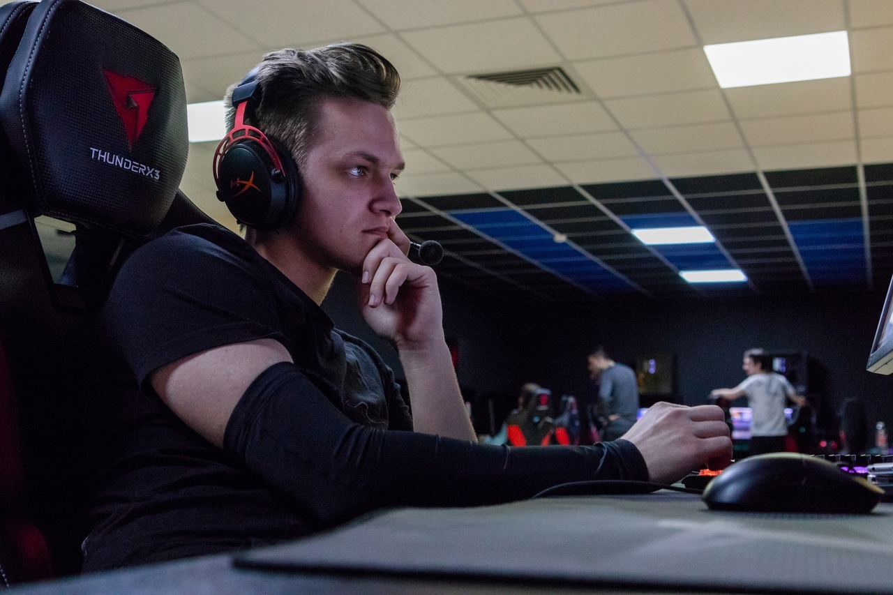
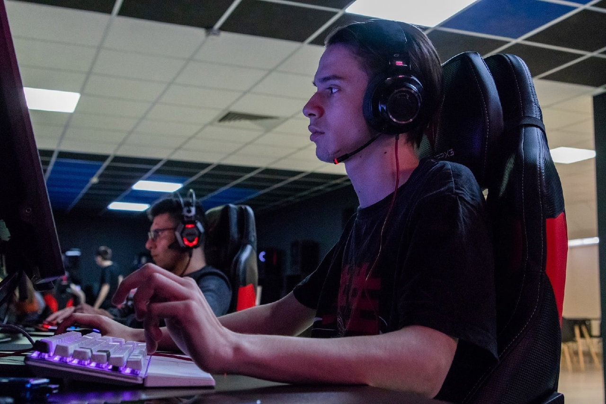
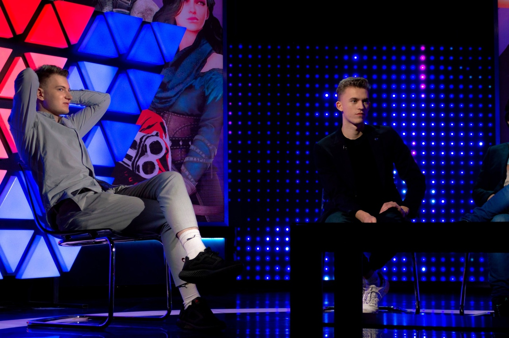

Интервью с игроком из команды ТИР-2 уровня по Valorant - Георгием «Optimist» Казьминым.
Георгий рассказал о своём начале карьеры, как он попал в команду ТИР-2 уровня, рассказал о тренировках и коммуникации в команде!

Интервью с игроком из сборной ДГТУ по Valorant - Вячеславом «SH1SH4» Приходкиным
Вячеслав рассказал о своём начале карьеры, планах на будущее в команде, о эмоциональном состоянии во время игры и еще много интересного!

Интервью с игроком из отборочных по CS:GO - Русланом "s4mik4dr" Давлетовым
Руслан, рассказал о своём начале карьеры, планах на будущее.